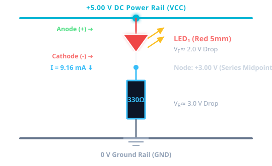
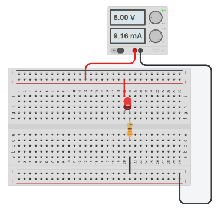
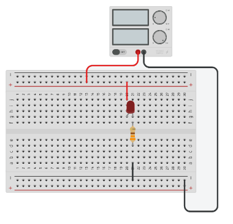

Unit 6: Microcontrollers
Engineering Baseline — What Can You Already Do?
Welcome to your microcontroller engineering journey. Today you step into the role of a junior development engineer to calibrate your practical skills, electronic theory, coding ability, and lab safety before we allocate engineering projects.
You Are Joining an Engineering Development Team
Calibrating technician & engineer capabilities for product development
You have joined an electronics engineering team developing a new microcontroller-based product.
Before the engineering team leader allocates development tasks, the team needs to establish what each technician and engineer can already do safely, confidently, and independently.
- This is a diagnostic calibration, not a graded pass/fail test.
- Work independently so we can accurately support your growth.
- Record when you are unsure — mistakes are valuable engineering data.
- Always ask immediately whenever lab safety is involved.
Learning Aim & Your Professional KSBs
The knowledge, skills, and behaviours expected of practicing junior engineers
🧠 Knowledge (K)
- Basic electronic circuits & components
- Circuit schematic symbols
- Voltage, current, and Ohm's Law (V = I × R)
- Binary number systems & digital logic
- C++ programming constructs
🛠️ Skills (S)
- Safe digital multimeter (DMM) operation
- Low-voltage DC power supply setup
- Breadboard circuit construction
- Electrical quantity prediction & measurement
- Static code tracing and logic modification
🤝 Behaviours (B)
- Strict adherence to laboratory safety protocols
- Methodological engineering troubleshooting
- Intellectual honesty & self-reflection
- Treating errors as calibration data
- Setting proactive personal growth priorities
What You Will Achieve Today
By the end of this 3-hour session, you will be able to:
- Demonstrate your current knowledge of basic electronic circuits and components.
- Recognise and interpret common circuit symbols.
- Demonstrate understanding of voltage, current and resistance.
- Use a multimeter and low-voltage power supply safely.
- Interpret a simple circuit schematic and construct the circuit on a breadboard.
- Predict and measure electrical quantities in a simple circuit.
- Demonstrate baseline understanding of binary and digital systems.
- Trace a short section of program code and predict its output.
- Modify a simple program to meet a stated requirement.
- Identify your current strengths and areas requiring development.
- Set an appropriate personal development priority for Unit 6.
Today's Session Sequence
Structured diagnostics, safe practical circuit construction, and profile reflection
| Time | Activity | Purpose | Action / Evidence |
|---|---|---|---|
| 0–10 min | Engineering Team Brief | Scenario introduction & expectations | Form Section 1 |
| 10–30 min | Toolbox Diagnostic | Electronics & mathematics diagnostic | Form Section 2 |
| 30–45 min | Digital Systems Baseline | Binary & logic voltage diagnostic | Form Section 3 |
| 45–65 min | Programming Code Tracing | Read, trace, and predict C++ output | Form Section 4A |
| 65–80 min | Programming Modification | Diagnose program alteration skills | Form Section 4B |
| 80–100 min | Practical Briefing & Safety | Schematic, equipment & 5-point check | Pre-Power Check |
| 100–120 min | ☕ Intermission / Break | Rest, recharge, and workbench prep | 20 Min Break |
| 120–130 min | Wokwi Circuit Simulation | Simulate 5V LED circuit virtually first | Sim Screenshot |
| 130–155 min | Breadboard Practical Challenge | Build LED circuit, take DMM readings | Form Section 5 + Photo |
| 155–170 min | Practical Reflection | Compare measured vs theoretical values | Reflection |
| 170–180 min | Individual Profile & Exit Ticket | Identify priorities & finalize submission | Submit Form |
Activity 1: Team Brief & Registration
Setting up your profile and understanding diagnostic expectations
- Work independently on diagnostic questions.
- Attempt every task — don't leave blanks.
- Avoid guessing what you think the tutor wants to see.
- Record when you are unsure.
- Always ask questions when physical safety is involved.
Open the Deliverables Form and complete Section 1 (Your Name, ID, and Prior Background).
Activity 2: Engineering Toolbox Diagnostic
Diagnosing electronics, circuit symbols, Ohm's law, and unit conversions
- Component Identification: Resistors, LEDs, Capacitors, Switches.
- Component Symbols: Schematic representations & wiring connections.
- Polarity: Identifying polarized devices (+ / -).
- Ohm's Law: V = I × R (rearranged: I = V / R, R = V / I).
- Metric Prefixes: Conversions (kΩ → Ω, mA → A; e.g., 4.7 kΩ = 4,700 Ω, 25 mA = 0.025 A).
Complete questions 7 through 11 in Section 2 of your Microsoft Form. Work steadily and record your calculation steps.
Activity 3: Digital Systems Baseline
Binary number representation, logic voltage levels, and fundamental logic gates
- Analogue vs. Digital: Continuous voltage vs discrete logic states.
- 8-Bit Binary Bytes: Positional weights (128, 64, 32, 16, 8, 4, 2, 1).
- Microcontroller Logic Levels: 5V DC systems (Logic 1 = HIGH ≈ 5.0 V, Logic 0 = LOW ≈ 0.0 V).
- Logic Gates: AND, OR, NOT gates and truth tables.
Answer the binary conversion, logic levels, and logic gate questions in Section 3 of your Microsoft Form.
00001010 to decimal:
Activity 4: Programming Baseline — Code Tracing
Trace code on paper without executing it — predict output and variable states
// C++ Code Tracing Challenge int temperature = 25; int limit = 30; if (temperature > limit) { cout << "WARNING"; } else { cout << "NORMAL"; }
- What value is stored in
temperature? - Is
temperature > limittrue or false? - What exact message will be displayed?
- Trace variable reassignments:
count = count + 2.
Activity 5: Programming Modification
Interactively edit and adapt code logic in the editor below, then copy your solution directly into the form
Adapt the temperature monitoring program in the editor:
- Task 1 (Threshold): Change the warning limit from
30to20 degrees. - Task 2 (Channel Scan): Change the loop condition from scanning
4channels to8 channels(channel < 8).
- Type your edits in the editor on the left.
- Click Copy & Open Section 4B below.
- Paste (Ctrl+V or Cmd+V) directly into Question 19.
Activity 6: Circuit Schematic Interpretation
Interpreting circuit schematics, exploring alternative circuit drawings, and understanding current flow



- Energy Conversion: Converts electrical energy into radiant light output.
- Current Limiting (Crucial Protection): An LED forward diode has near-zero resistance once turned on. Without resistor R₁, it would draw excessive current from the 5V supply and burn out instantly!
- Voltage Division: R₁ safely drops the remaining ≈ 3.0 V (5.0 V supply – 2.0 V LED), holding current safely at I = 3.0 V / 330 Ω ≈ 9.1 mA.
- Component Order in Series: Does R₁ go before or after the LED? In a series loop, current is identical at every point (Kirchhoff's Current Law). The circuit behaves 100% identically either way!
- Breadboard Wiring Columns: Holes in the same numbered vertical column half
(e.g.
21j–21for21e–21a) are connected by internal spring clips across the central divider trough.
Mandatory Pre-Power Safety Gate
You must verify all 5 checks before energizing the circuit
Confirm these 5 verification items in Section 5 of your Microsoft Form during the practical challenge.
☕ 20-Minute Engineering Break
Rest, step away from screens, and prepare your workbench for practical testing.
Wokwi Virtual Circuit Simulation
Simulate the 5V LED circuit virtually before touching physical breadboard components
- Open Wokwi simulator in your browser.
- Add a 5V DC Supply, 330 Ω Resistor, and LED.
- Wire the components according to the schematic.
- Start the simulation: Verify LED illuminates and current flows properly.
- 📸 Take a screenshot of your working Wokwi simulation.
Save your Wokwi screenshot. You will upload this in Section 5 of your Microsoft Form along with your physical breadboard circuit photo.
Baseline Practical Challenge: Build & Measure
Construct the physical circuit, measure electrical quantities, and record evidence
| Quantity | Symbol | Expected Theoretical Range |
|---|---|---|
| Supply Voltage | VS | 5.00 V ± 0.25 V (4.75 V – 5.25 V) |
| Resistor Voltage | VR | ≈ 2.80 V – 3.20 V |
| LED Forward Voltage | VF | ≈ 1.80 V – 2.20 V (Red LED) |
| Circuit Current | I | ≈ 8.0 mA – 10.0 mA |
Upload the following evidence items in your form:
- 1. Wokwi simulation screenshot
- 2. Photo of your physical breadboard circuit
- 3. Photo of your digital multimeter reading
Activity 8: Practical Reflection
Analyzing discrepancies between theoretical predictions and measured physical data
- Did your measured supply voltage equal VS = VR + VF?
- How did component tolerance (±5% resistor tolerance) affect your readings?
- What difficulties did you encounter when placing multimeter probes in circuit?
- How did the physical measurement compare with your Wokwi simulation?
In physical engineering, real-world measurements rarely match theoretical calculations down to the last decimal place due to meter burden voltage, lead resistance, and component manufacturing tolerances. Explaining why discrepancies occur is a core diagnostic engineering skill.
Activity 9: Individual Baseline Profile
Calibrating your starting baseline across the 5 core engineering domains
- Electronics: Components, symbols, Ohm's law.
- Digital Systems: Binary, logic levels, logic gates.
- Microcontroller Programming: Code tracing, C++ syntax.
- Electrical Measurement: Multimeters, safety, precision.
- Circuit Construction: Breadboards, wiring, schematics.
Rate your confidence (1–5) and state your #1 personal development priority for Unit 6 in your form.
Activity 10: Exit Ticket & Next Steps
Submitting your responses and previewing Week 2
In the final questions of Section 5:
- List three things you can do confidently.
- List one thing you found challenging today.
- Click Submit on your Microsoft Form.
Microcontroller Architecture & GPIO Programming
Next week we unpack the Arduino Uno internal registers, memory architecture, and start writing real-time GPIO control firmware.